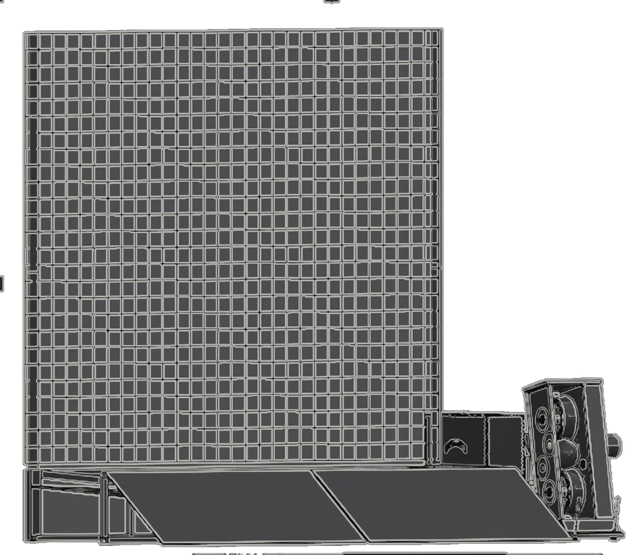
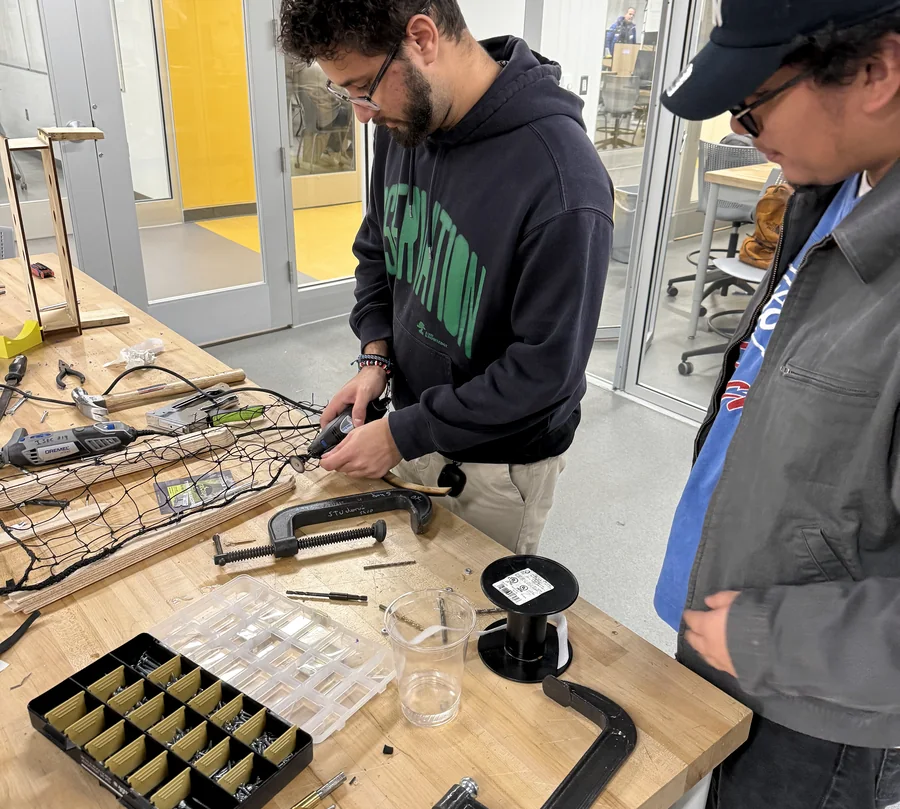
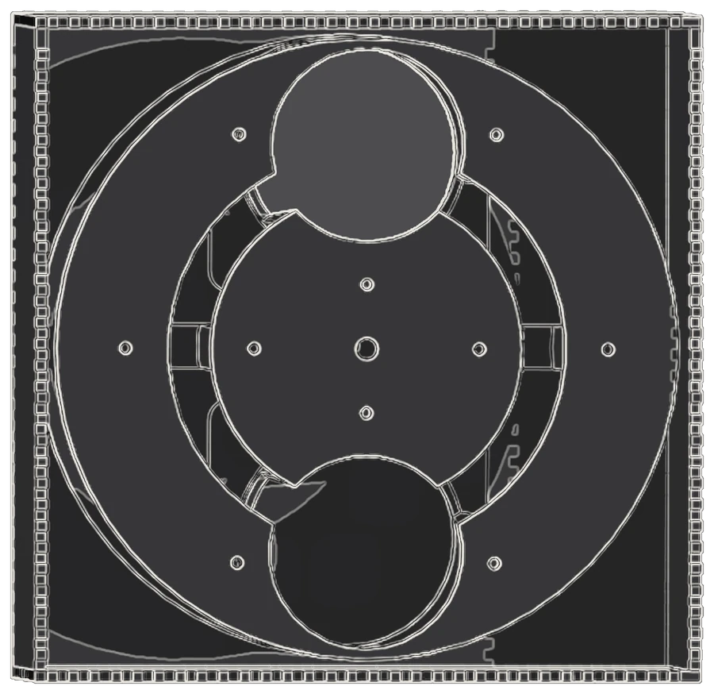
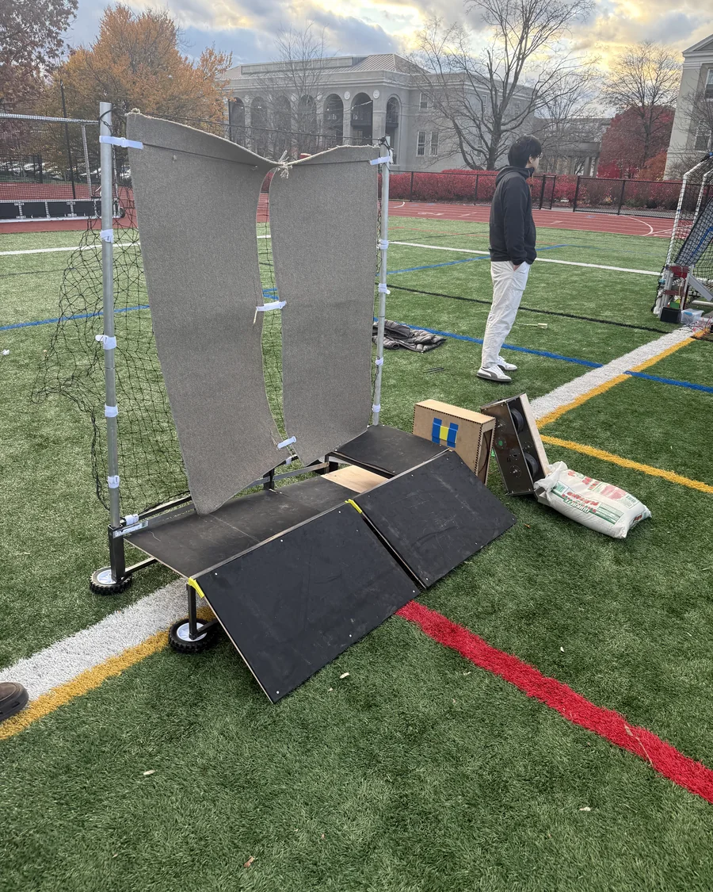
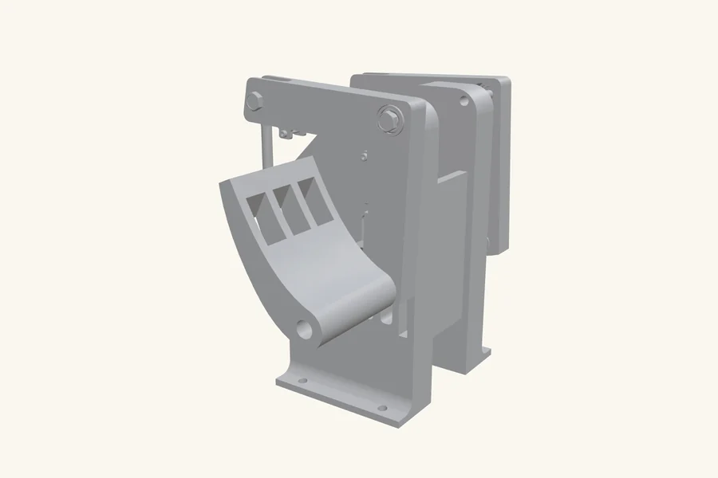
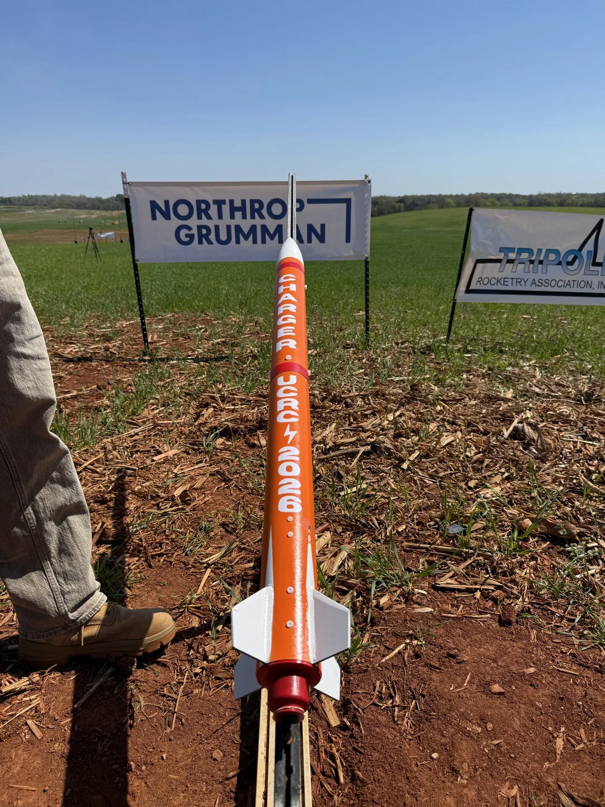
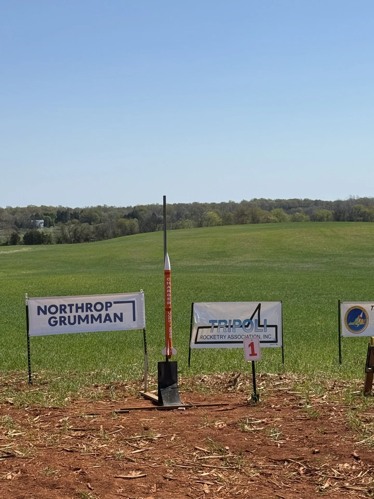
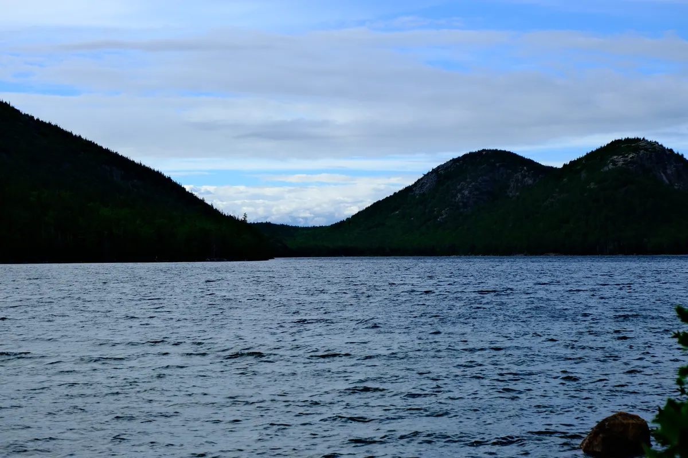
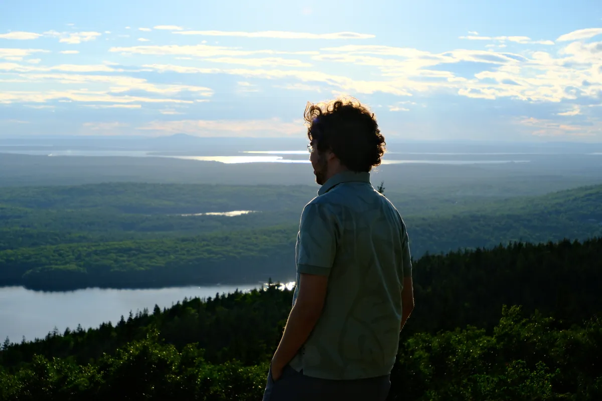
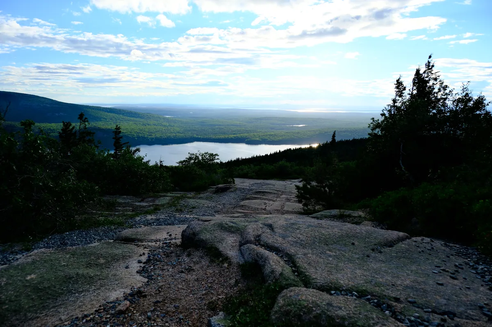

Mechanical engineer, Union College '26. A $420 test rig that a supplier quoted at $1,700, a national rocketry win, and 344 frames from the drive north.
I work across design, test and controls, and the part I am actually good at is the middle one. Building something is the easy half. Knowing whether it works, to what tolerance, and how you would prove it to someone who does not trust you yet, is the half that takes judgement.

SolidWorks, GD&T, tolerance stack-up, and drawings a machine shop can quote from without phoning me.

Rigs, fixtures and instrumentation. Heat flux, thermocouples, 24-bit ADCs, and a steady-state criterion the firmware enforces instead of me.

Ladder logic, panel wiring, relays and solenoids, 4-20 mA instrumentation, PID heater loops, and embedded C++ when the PLC is the wrong tool.

Printed in PETG, milled, laser cut, wired and calibrated. If I designed it, I have also held it.
A softball machine that catches and throws back. Twelve people; I co-led the feeder and owned every wire in the robot. 100% indexing on the day.
Read it 02Ranks samples by thermal resistance on a $420 build a supplier quoted $1,700 for. Calibrated heat flux, a steady-state acceptance rule, and safety that survives dead firmware.
Read it 03Twelve printed parts on one coordinate system, compliant contacts, zero machined components. For specimens a commercial fixture would break before the test starts.
Read it 04Fighter-style geometry, three axes, Hall-effect sensing with zero wear parts, and USB HID firmware that needs no drivers.

Read it 05One Peltier module that heats or cools any mug by reversing current. Bench-validated at 11 C cold face before a line of control code.
Read it 06Founded the team in 2023, grew the budget 700%, chartered an NAR section, then took first place nationally as captain and chief engineer.
Read it 07A single-file, zero-install Python tool whose whole design is about never losing a run, even with Excel holding the file hostage.
Read itThe company needed to rank flat samples by thermal resistance and had no way to do it. The cheap approach, using a Peltier element as the sensor, proved inaccurate enough to be useless. So I stopped and paid for a calibrated heat-flux sensor. That one decision is the reason any of the numbers mean anything: the rig reads actual watts per square metre through the sample instead of inferring it from heater power.
The firmware then refuses to report a result until the reading has held steady within 1% for a full hour. A person watching a graph makes that call impatiently and differently every time. The rig makes it the same way every time, which is the entire point of a test rig.
And because runs happen overnight in an empty building, the heater is physically limited to 37 W, behind a one-shot thermal fuse and a mechanical thermostat that need no software to work. If the code crashes, nothing happens.
My supervisor's written review: "I did not alter your design or parts because I believe your rig is already in a good place."


I founded the Union College Rocket Team in 2023 with nobody on it. Thirteen members led, twelve more trained, a 700% budget increase I wrote the proposals for, and a charter as an official NAR section.
Then first place in the deployable sensor payload event, as captain and chief engineer.
My photographs. The result is verifiable on union.edu and rocketbattle.org. Read the program story
ModuFly's airframes are 3D printed, which raises an obvious question nobody had answered: what happens to a printed motor mount when the motor itself fails? Not degrades. Fails, with an explosion.
So we made one fail. The motor was deliberately cracked down the middle to guarantee an explosive failure rather than a clean burn, and we instrumented the mount with two thermocouples to record how fast and how far the temperature actually moved, so deformation could be tied to real numbers instead of impressions.
The answer was unambiguous and not the one we wanted. The mount fails immediately and is not reusable. There is no partial survival and no safe margin to design against. That result is the reason the mount was redesigned around containment rather than around nominal loads, and it is the sort of thing you only learn by choosing to destroy something on a night you control.
Thermocouples 2 Failure mode induced Mount survival noneIt catches a softball and throws it back. I co-led the four-person feeder, then took over every wire in the robot: ESP32, a 120 W flywheel on a MOSFET stage, stepper indexing, hardware emergency cut-offs. On the day it indexed 100% reliably.
My footage. Shot on the field at the demonstration. Read the write-up

344 frames from one road trip north. Granite summits before the light came up, the coast, and Portland Head Light on the way home.

Room 135 I made alone, and it was nominated for cinematography, editing and sound design. Three nominations for doing three jobs.

Licensed ultralight pilot. Competitive archery, which is the same skill as flying: hold still, then commit.
Looking for design, test or controls work. I will bring CAD a shop can quote from, firmware that does not need babysitting, and the habit of measuring the thing rather than assuming.